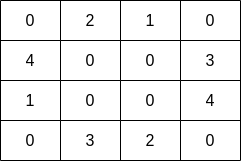
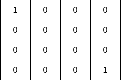

| Category | Difficulty | Likes | Dislikes |
|---|---|---|---|
| Algorithms | Medium | 940 | 65 |
array | depth-first-search | breadth-first-search | union-find | matrix
microsoft | facebook | amazon | google
You are given a 0-indexed 2D matrix grid of size m x n, where (r, c) represents:
grid[r][c] = 0, orgrid[r][c] fish, if grid[r][c] > 0.A fisher can start at any water cell (r, c) and can do the following operations any number of times:
(r, c), orReturn the maximum number of fish the fisher can catch if he chooses his starting cell optimally, or 0 if no water cell exists.
An adjacent cell of the cell (r, c), is one of the cells (r, c + 1), (r, c - 1), (r + 1, c) or (r - 1, c) if it exists.
Example 1:

Input: grid = [[0,2,1,0],[4,0,0,3],[1,0,0,4],[0,3,2,0]]
Output: 7
Explanation: The fisher can start at cell (1,3) and collect 3 fish, then move to cell (2,3) and collect 4 fish.Example 2:

Input: grid = [[1,0,0,0],[0,0,0,0],[0,0,0,0],[0,0,0,1]]
Output: 1
Explanation: The fisher can start at cells (0,0) or (3,3) and collect a single fish.
Constraints:
m == grid.lengthn == grid[i].length1 <= m, n <= 100 <= grid[i][j] <= 10